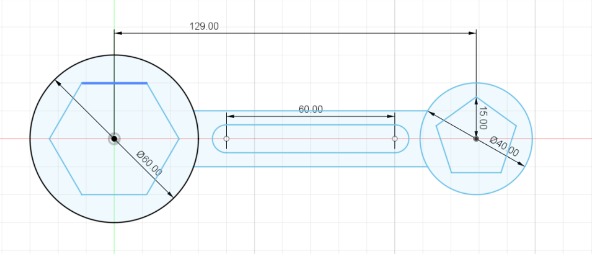

Raster Graphics
Raster is used for photographs and images, and uses the .jpg, .png formats.
It can be edited with GIMP, Adobe PhotoShop or Paint.
As practice, I removed the background on the first image and placed it on a different background. I did this practice using GIMP.
 |
After resizing the image, this is the final product.
Vector Graphics
Vector uses mathematical functions and is characterised by clean lines. It uses the .svg, .ai formats.
It can be edited with InkScape, Adobe Illustrator, Corel Draw.
As practice, I made a vector icon of this image. I did this practice with InkScape.
To trace out the image, I used a pen that can draw Beizer curves and straight lines. With this pen, I traced out an outline of the image, then filled in the spaces with colour to create the logo.
 |
Computer Aided Design (CAD)
CAD is a vector tool that allows you to create 2D drawings and 3D models in a within a virtual space.
In this module, we will be mainly using CAD to draw and model our design.
Some examples of CAD tools are
- Autodesk Fusion 360
- Autodesk Inventor
- Rhino
- Solidworks
Autodesk Fusion 360
It is an integrated CAD, CAM, and CAE software that allows you to consolidate and simplify the product development process.
Fusion 360 is free for educational use and is easy to learn through online tutorials.
Drawing exercise 1
I used a rectangle sketch to make the main portion of the drawing, then used an arc to create the top. Then, I used the
grid background as a guide to place the circle and rectangle in the right positions.
Drawing exercise 2
I used a circle sketch for the round parts of the drawing, then I used the circumscribed polygon for the hexagon, and the
inscribed polygon for the pentagon.
